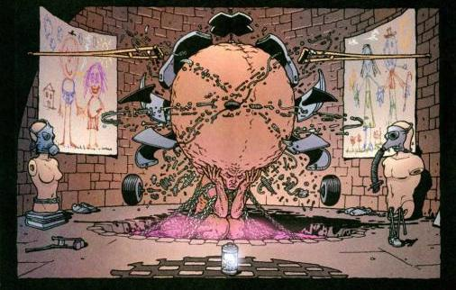
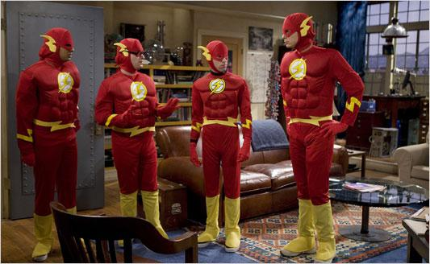

Special Brain
A colleague (and friend) of mine (hereafter referred to as Katie Mack the Physics Hack) produced a fun video last year that tried to show how people sometimes react when she tells them that she studies physics:
I loved this video because I've had a number of experiences like this. My favorite reaction that I've ever gotten happened in 2007. I was on a trip during college with other college kids, and I was placed in a hotel room with some guys who went to another school. We met for the first time while unpacking, and naturally we asked each other what we were studying. Turns out my new roommate was majoring in international business, something I knew nothing about. Not wanting to alienate a total stranger I was going to be sleeping in the same room with, I asked him questions and told him that his chosen major sounded interesting and important. I told him that I studied physics, and when he asked me what that meant I told him how I had worked on modeling cell division. My new roommate responded, "You must have a special kind of brain for that."

A special brain. [1]
This anecdote has stuck with me for a couple of reasons-- first because "special kind of brain" is a funny turn of phrase, and second because I think it's a perfect example of how an attempt at a flattering response can actually create some uncomfortable social distance between people.
"Special kind of brain" was my roommate's way of expressing how intelligent he thought I was. (Or, as Zach put it in Katie's video, "You must be soooooo smart!") His reaction hinged upon the assumption that what I was interested in doing was so far beyond the understanding of ordinary folk that I could be set apart as a member of an elite group. Instead of being merely complimentary, his comment held me at arms' length. His reaction wasn't something I took offense to, but it made me uncomfortable to hear that he considered me an outsider of sorts based on my professed interests.
Speaking more generally, the notion that scientific professionals are set apart from other people as members of a professional group isn't so ridiculous. After all, these days people's lives are often defined by their careers. (And of course scientists aren't the only profession with associated negative stereotypes-- Anyone know any good lawyer jokes?). But to me, thinking of scientists as some kind of inscrutable cabal of geniuses is an exaggeration. The truth is, not every scientist is a rocket-powered superbrain. Quite the opposite-- scientists make silly mistakes all the time. Being a scientist is a technical profession requiring years of training like law, medicine, or accounting: there are a few practitioners who really are exceptionally smart, while most of the others aren't.
The even more disappointing truth is that being a scientist is actually usually pretty mundane. Don't get me wrong-- the long-term goals of making new discoveries and developing new insights into the world around us are exactly why I like my job. I just mean that the day-to-day labor involved can be as tedious as any other profession. I sit in my cubicle and code (debug) endlessly on my laptop, or I read books and research papers to learn new things about my field. Most days don't get much more action-packed than that. In a lot of ways it's like any other office job. Aside from the end goal of research, working as a scientist is not so special.
I work in a cubicle. Not here.[2]
Another reaction that I get when I say I study physics is one of apprehensive disappointment. (Zach's pronunciation of 'ohhhhhh...' combining equal parts boredom and distaste was dead on.) I don't think I need to dwell on this too long-- it is undeniably unpleasant for me when I hear this. Upon hearing that I'm a scientist, otherwise polite, kind people will suddenly lose their cool and be unable to hide the fact that my profession conjures up memories of boredom and frustration. ("Oh, man. I HATED physics in high school.") As Katie Mack puts it at the end, "polite interest is the way to go."

"Have you ever seen the Big Bang Theory?
Is that what physicists are really like?
I bet it is. I mean, no offense."
There's another type of off-putting reaction that comes up sometimes, which is commenting (jokingly or not) that I'm similar to familiar caricature of scientists that appear in popular culture. "You're just like Sheldon Cooper!" is a comment I've heard more times than I care to say. I know that The Big Bang Theory is a popular show, but frankly I dislike being associated I with characters that are cartoonishly depicted as condescending and socially tone-deaf [3]. Now, I appreciate that some people, when meeting others for the first time, like to demonstrate familiarity with others' jobs, but to me it just seems that making a pop culture references to another person's profession is just a bad way to go. I find this to be a safe bet when meeting anyone, not just scientists, simply because popular culture isn't a great way to learn about anyone else's job. Try telling the next lawyer you meet that they remind you of Saul Goodman, and see how they react.
So, what is there for physicists (and other scientists) to do when this happens? The most facile answer to this question is for us to grow a thicker skin and suck it up. Just ignore it when people have disparaging reactions upon first meeting us, and find a way to get past this in conversation. The thing is, I personally am not good enough at hiding my own negative reaction upon hearing these kinds of obnoxious remarks. Ideally, I'd like to make conversation easier by finding a way to avoid them altogether.
I can't change the way other people react to learning about my profession, but I can change how I present myself. Personally, I have given up on telling people that I'm in the physics department. Instead, when asked "what do you study in grad school?" I tell then exactly what I'm up to-- I study how infectious diseases spread through human and animal communities. I've found that I get a much more relaxed reaction when I do this. The same people who may have uncomfortable reactions to physics have enough familiarity with the idea of epidemics to be a little more comfortable. And besides, everyone has some amount of morbid curiosity about the next big plague that's going to kill us all. (I realize that this may not be a viable strategy for some of my colleagues who study nanoscience, magnetic materials, high-energy particles, or other mainstream physics topics. I'm interested to hear if anyone else who works in the sciences has come up with a different technique for breaking through the "I'm a physicist" ice.)
A friend of mine once chastised me for doing this. "Why should you have to hide what you're interested in?" he asked. "If they react badly to your profession, is it really worth getting to know them?" To that I say that I'm still telling them honestly what I'm interested in, I just sidestep the potentially negative associations carried by the word "physics." And besides, just because someone has a bad or obnoxious reaction to finding out that I'm a physicist doesn't mean they aren't worth meeting. The fact remains that I've found this to be a great way to keep the getting-to-know-you conversation light when meeting new people for the first time. I wish I could wave a magic wand and make it so that everyone was comfortable wih the idea of interacting with professional scientists, but I can't. While I'm waiting for Bill Nye and Neil DeGrasse Tyson and others to humanize the profession for the public, this is how I'll be introducing myself.
Katie Mack and Zach's video really got me thinking about how to talk to other people about their jobs with more empathy-- avoiding flattery and stereotyping, and doing my best to hide any negative visceral reactions evoked by the thought of others' jobs and interests. One question that has occurred to me is whether there are people in completely different professions experience similarly frustrating reactions when they say what their jobs are. Programmers, actuaries, office administrators, copy editors, art dealers, karate instructors, gravediggers, lion-tamers, etc.: whoever you are, I want to hear about any difficulties you may have had with telling other people what you do in the comments below.
^ Image from New X-Men #121, written by Grant Morrison with art by Frank Quitely. You can see some more of this particularly trippy story here.
^ All of the imagery of Frankenstein's monster being brought to life with electricity comes from James Whale's Frankenstein from 1931. Mary Shelley's original book contained no mention of electricity, and instead remained eerily vague about the mechanisms for creating life.
^ Here is a really level-headed critique of The Big Bang Theory that I like a lot. There isn't a ton of hand-wringing, and the author does talk about what the show might consider doing differently. It was written three years ago.
- Watch what happens when a brain surgeon meets a rocket scientist for the first time . To justify my linking to this skit (outside of the fact that I love it so much), I'll just say that nobody is acting appropriately in this video.
- (Sorry, lawyers.)
Comments
Comments powered by Disqus